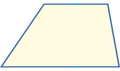
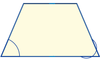
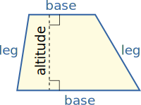
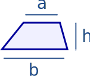
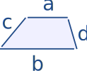
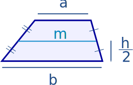

Trapezoid
(Jump to Area of a Trapezoid or Perimeter of a Trapezoid)
A trapezoid is a 4-sided flat shape with straight sides that has a pair of opposite sides parallel (marked with arrows below):
|  |  | |
| Trapezoid | Isosceles Trapezoid |
A trapezoid:
| has a pair of parallel sides | |
|
is an isosceles trapezoid when it has equal angles from a parallel side |
|
| is called a "trapezium" in the UK (see below) |
Play with a trapezoid:

The parallel sides are the "bases"
The other two sides are the "legs"
The distance (at right angles) from one base to the other is called the "altitude"
Area of a Trapezoid
|  |
The Area is the average of the two base lengths times the altitude: Area = a+b2 × h |
Example: A trapezoid's two bases are 6 m and 4m, and it is 3m high. What is its Area?
Area = 6 m + 4 m2 × 3 m = 5 m × 3 m = 15 m2
The Area of Polygon by Drawing tool is helpful when you can draw your Trapezoid.
Perimeter of a Trapezoid
The Perimeter is the distance around the edges.
|  |
The Perimeter is the sum of all side lengths: Perimeter = a+b+c+d |
Example: A trapezoid has side lengths of 5 cm, 12 cm, 4 cm and 15 cm, what is its Perimeter?
Perimeter = 5 cm + 12 cm + 4 cm + 15 cm = 36 cm
Median of a Trapezoid
|  |
The median (also called a midline or midsegment) is a line segment half-way between the two bases. The median's length is the average of the two base lengths: m = a+b2 |
You can calculate the area when you know the median, it is just the median times the height:
Area = mh
Trapezium
A trapezium (UK: trapezoid) is a quadrilateral with NO parallel sides.
The US and UK have their definitions swapped over, like this:
| Trapezoid | Trapezium | |
| US: | a pair of parallel sides | NO parallel sides |
| UK: | NO parallel sides | a pair of parallel sides |